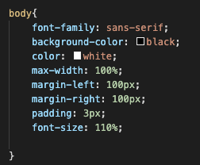

| Filename | File type | Page title | Outline |
|---|---|---|---|
| index.html | HTML file | Home | This is the homepage of the website, which contains an introduction and the most current and revelant information about me in relation to my education. |
| past.html | HTML file | My Past | This page summarise my past schooling and career endeavours. |
| future.html | HTML file | My Future | This page summarise my future endeavours, what I want to do in life and which field I want to head into. |
| comments.html | HTML file | Comments | This page summarise my past school and career endeavours. |
| websystems.css | CSS file | N/A | This stylesheet file has styling options/ aesthetics for the abovementioned pages. It specifies how every item on the pages is to be positioned, styled, and viewed. |
| Tag | Meaning |
|---|---|
| < h#> | Describes the #-level heading |
| < p> | Describes a paragraph |
| < table> | Represents table data |
| < ol> | Represents ordered list of information (numbered list) |
| < ul> | Represents unordered list of information (dot-point list) |
While websites may vary in how they look and their Aesthetics. The fundamental structure of a website is usually identical or similar. They all consist divisions that seperate the various content and parts of a website. The three main divs are the header, body and footer.
| Name | Type | Meaning |
|---|---|---|
| body | Element | Setting the overall styling for the body of the webpage. |
| menubar | Class | Refers to styling for the menubar, for when its static, active, or user is overing over the block. |
| h# | Element | Refers to the styling set for each of the headings number, to make them more prominent and appealing. |
| .table | Class | Refers to the styling of the table in the comments section. The CSS is used style the colour, font, width spacing and other aspects of the table. |
| .links | Class | Refers to the styling for linked that were embed within the webpage, and how they were to be styled when selcted or hovered over. |
| .flink | Class | Refers to the linked in the footer, that also enable for navigation through the website similar to the menubar, but at the bottom for convenience purposes. |
The underlying principle for the design for this website was minimalism, perfectly presented by architech 'Ludwig Mies van der Roh' when he said "Less is more". This is primarily due to my belief that there is something elegant in simple design. The wesbite has a black background to elevate the similplicity of the website and help focus on the content. Additional colours are utilised in a way to provide "pops" of colour to appeal to users and seperate the content into its various sections. Tables and images have also been used to supplement or complement text where approporiate to provide a more streamlined experience. As too much text will lead to the website feeling clunky and heavy.
Interactive elements have been added to the website to provide a more immersive experience for the users. This can be primarily be seen in the navigation bar when you hover over the buttons. Each button you hover over will change colour to indiciate that it can be selected. Once selected the block will change colour (grey) and the text will also change colour (orange) to indicate it has been selected. This is also the case with the link to the architect in the Inspiration section and Accessiblity section. This is very beneficial to people with vision difficulties as smaller indications of selections may not be as obvious to user.
This website has been made to the specificatons of the UTS WebAss Specifications and the Accessiblity guidelines of the W3 Web Accessiblity Initiative. This enables this website to cater to the need of individuals who have accessibility requirements.
The standard sans serif font has been used for this website as it is considered to be the the conventional standard for websites. San serif is a clean font that is not very harsh on individuals who have difficulty reading. This has been used with high-contrast colours to provide a enjoyable reading experience. For font sizing, rather than setting it to a specific number. It has been set to a percentage so the size of the font dynamically changes when the website it zoomed into (as shown in image to right). To maintain the overall structure of the website and to provide users a better reading experience.
A black background was used for design significance and also to contrast the white text. This enables individuals to read with ease as there is no clashing any colours that makes the content difficult to read. Colours from the same or close family have been used to seperate the difference sections of the content, to provide a better user experience without adding much bulk. Menu selections also change colour to contrast with the backgound to indicate it can be selected. This is very beneficial to people with vision difficulties as smaller indications of selections may not be as obvious to user.
The structure of the website has been based of the guidelines provided. Each heading, and its content has been labelled correctly in order for users using screenreaders will be able to navigate the website with ease (ie. < h1>, < p>, < th>). All images also have alt texts for users using screen reader or when images are not working.